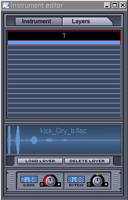
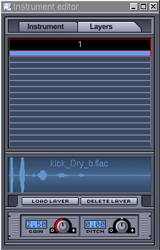

Hydrogen Manual
Antonio Piraino
Alessandro Cominu
Hydrogen is a software synthetizer which is able to be used either by itself, emulating a drum machine based on patterns, or via an external MIDI keyboard/sequencer software. Hydrogen compiles on Linux/x86 and MAC OSX, although the latter is still experimental, so ask in our devel mailing list for further details.
- Table of Contents
- 1. Introduction
- 1.1. Download
- 1.2. Build
- 1.3. Audio driver configuration
- 1.3.1. OSS audio driver
- 1.3.2. Jack audio driver
- 1.3.3. ALSA audio driver
- 2. GUI
- 2.1. The main toolbar
- 2.2. Song Editor
- 2.3. Pattern Editor
- 2.4. Mixer
- 2.5. LADSPA plugins
- 2.6. Menu
- 2.6.1. Preferences
- 2.6.2. Audio engine info
- 2.6.3. Drumkit manager
- 3. A new song
- 3.1. "Song" mode and "Pattern" mode
- 3.2. A new pattern
- 3.3. A new sequence
- 3.4. Adjust from the mixer
Chapter 1. Introduction
1.1. Download
The latest stable version of hydrogen is available at http://hydrogen.sourceforge.net or http://hydrogen-music.org
It is possible to download the source files directly from CVS snapshots with:
bash$ cvs -z3 -d:pserver:anonymous@cvs.sourceforge.net:/cvsroot/hydrogen co hydrogen
Compiling Hydrogen depends on the following libraries:
-
libsndfile at http://www.mega-nerd.com/libsndfile/
-
qt (>= 3.2) at http://www.trolltech.com
-
ALSA (>= 1.x) at http://www.alsa-project.com (only if you wish to use ALSA as audio driver)
-
Jack Audio Connection Kit (>= 0.80) at http://jackit.sourceforge.net (only if you wish to use Jack as audio driver)
1.2. Build
After having downloaded and decompressed the tar.gz file there's only to:
$ cd hydrogen-* $ ./configure $ make $ su -c "make install"
Before compiling, check for additional options with:
$./configure --helpNamely, if you get some error while running Hydrogen and you want to report it remember to configure the makefile with:
$./configure --enable-debugPlease note that at the moment no binary packaging (.rpm, .deb, ...) is available. Contributors are welcome. Also remember to compile with at least a GCC 3.x to be 100% sure to avoid any possible problem.
1.3. Audio driver configuration
It's very important to choose the proper audio driver for our system, since the choice may influence quite much general performances. The choice is between Oss audio driver, ALSA and Jack audio driver.
1.3.1. OSS audio driver
The Oss audio driver uses /dev/dsp and it's based on the OSS interface which is supported by the vast majority of sound cards available for linux; this said, the use of this audio driver blocks /dev/dsp until Hydrogen is closed i.e. unusable by any other software. Use it as last resource.
1.3.2. Jack audio driver
The Jack driver is a professional audio server which permits very low lag and exchanges with other audio software. We strongly recommend using this driver to have the best out of Hydrogen. It needs its server running, so remember to launch it before Hydrogen. [TODO INSERT notes about features of jack related and possible binding with other software like ardour]
1.3.3. ALSA audio driver
NEW! Now Hydrogen works also with ALSA, the new Linux standard audio drivers.
Chapter 2. GUI
2.1. The main toolbar
Before analyzing the two main frames of Hydrogen, let's take a quick look at the main toolbar:


Main controls to start [Hotkey = Spacebar], stop, fast forward, rewind, loop a song or a pattern.

Set Pattern/Song Mode.

Set speed of playing (range: 30-400 bpm) [Hotkey = mouse wheel] and button to enable/disable metronome

Shows CPU load.

Shows MIDI events.

Click to enable Jack transport: Hydrogen will work as 'slave' with another 'master' program (e.g. Ardour). This applet is only available if Jack Audio Driver is selected.
Other useful keybindings (not customizable for the moment):
-
[CTRL + O] = Open File
-
[CTRL + S] = Save File
-
[Backspace] = Restart song or pattern from the beginning
2.2. Song Editor
The frame "Song Editor" (Fig. 1) shows the song we are creating; each blue coloured square appearing on this frame means a complete bar as shown in the Pattern Editor, which gathers the different parts of the song (e.g. intro, verse, bridge, chorus and so on). We have complete freedom to add, remove or move patterns in any order we prefer. We can also copy and paste patterns: use left mouse button to highlight an area and drag it around. Dragging with CTRL key pressed copies the patterns.
The Song Editor comes with 5 buttons:

-
 Create a new pattern (and asks for a name).
Create a new pattern (and asks for a name).
-
 Move currently selected pattern up or down.
Move currently selected pattern up or down.
-
 Completely delete all patterns (asks for confirmation!).
Completely delete all patterns (asks for confirmation!).
-
Enable selecting patterns for copy & paste.
-
Enable add/remove patterns.
Under these buttons there is a list of patterns created and when they will played (each square == 1 bar). Click on an squarebox to add or cancel the pattern. Clicking on right mouse button over the name of a pattern will bring up a menu to change name of the pattern or to allow copying/deleting it. Patterns with very same name are not allowed.

Fig. 1 The Song Editor
2.3. Pattern Editor
The "Pattern Editor" frame (Fig. 2) let us create or modify the pattern (bar) which is being played, or add/remove notes and tune intensity as well. On the higher-left side you find a pair of LCD screens: the first one lets you choose a pattern to play between those created while the second represents the current grid resolution (4 through 64) and the 'three beats' bars (4T, 8T, 16T and 32T) plus a menu marked "size" which will let you visualize play only a part of the complete bar. Selecting an instrument which has at least one note in the pattern will show a few vertical bars (one per note) on the lowest part of this frame to allow tuning 'hard' or 'soft' beat. The button
 (hear new notes) will play the sample as it's been added to the pattern. Finally you can move an instrument up and down in the sequence with the buttons
. A useful "Quantize" feature is available activating
(hear new notes) will play the sample as it's been added to the pattern. Finally you can move an instrument up and down in the sequence with the buttons
. A useful "Quantize" feature is available activating
 . This way the beats inserted will automatically respect the grid resolution currently applied.
. This way the beats inserted will automatically respect the grid resolution currently applied.

Fig. 2 The Pattern Editor
Each instrument has its own set of features accessible right-clicking with your mouse on it; "Mute", "Solo" are self-explaining while "Lock" locks the instrument belonging to a drumkit on that pattern even if you change drumkit: this way you can easily mess up more drumkits together and create your own! "Fill/Clear notes" fills or deletes every note of that instrument in the current pattern (remember that filling a pattern is always relative to the grid resolution set) and finally "Randomize velocity" automatically apply a pseudo-random velocity to each note of that instrument in the pattern. The more velocity you set on the instrument, the more hydrogen will hit "hard" on that instrument when played.

Also, you can set new beats clicking on which enables direct input by MIDI events or by keyboard according to the following map key=instrument:
Note that the name of the instrument depends on the drumkit loaded. This list refers to the GMKit loaded by default. The position of the instrument, however, is the same.
Z = Kick
X = Snare Jazz
C = Snare Rock
V = Tom Low
B = Tom Mid
N = Tom Hi
M = Cowbell
Q = Ride Jazz
W = Ride Rock
E = Instrument No. 17 (currently not assigned)
R = Instrument No. 18 (currently not assigned)
T = Instrument No. 20 (currently not assigned)
Y = Instrument No. 22 (currently not assigned)
U = Instrument No. 24 (currently not assigned)
S = Stick
D = Hand Clap
G = Closed HH
H = Pedal HH
J = Open HH
2 = Crash
3 = Crash Jazz
5 = Instrument No. 19 (currently not assigned)
6 = Instrument No. 21 (currently not assigned)
7 = Instrument No. 23 (currently not assigned)
Here's a quick reference of the above bindings for your convenience. See Chapter 3 for a basic walkthrough of how the pattern editor works.

2.4. Mixer

Fig. 3 The Mixer
The Mixer frame (Fig. 3) is useful for tuning a global or single volume of the current drumkit. It shows the current peak (click on
 to disable, useful on old CPUs) and let you set the maximum peak allowed (tune with the fader knob of the instrument), lets you modify attributes like pan
to disable, useful on old CPUs) and let you set the maximum peak allowed (tune with the fader knob of the instrument), lets you modify attributes like pan
 , play solo
, play solo
 , mute
, mute
 or test play only that instrument
or test play only that instrument
 ; selecting in the Pattern Editor an instrument causes a blue LED to light on (near the play button). Near the global volume knob, you can set 3 global effect such a swing (shifts a few notes back or forward not randomly), timing (modify timings of the notes) and humanize effect (random velocity editing).
; selecting in the Pattern Editor an instrument causes a blue LED to light on (near the play button). Near the global volume knob, you can set 3 global effect such a swing (shifts a few notes back or forward not randomly), timing (modify timings of the notes) and humanize effect (random velocity editing).
Double clicking over the name of an instrument in the Mixer frame will bring up a doubled face tool to modify many properties of that instrument.
 

The first tab ('Instrument') lets you fine tune the instrument: you can adjust Attack, Decay, Sustain, Release, Cutoff and Resonance (both of which can be excluded) or even add a random pitch.
The second tab ('Layer') can add WAV/AU/AIFF/FLAC samples up to 16 layers to the instrument according to the level of its velocity and tune pitch and gain.
In addition to all this you can set up to 4 special LADSPA effects for each instrument switching the
 button. See next section for a detailed overview.
button. See next section for a detailed overview.

2.5. LADSPA plugins
Hydrogen can also add effects to sounds using any LADSPA plugin library. You need to have installed the LADSPA sources (available from http://www.ladspa.org) and while this will give a rough idea of how it works you should really have a taste of the real thing installing one or more of these libraries, it's as simple as a "make && make install":
SWH-Plugins available at http://plugin.org.uk. Note that before compiling these plugins you need the FFTW tarball from http://www.fftw.org.
CMT available at http://www.ladspa.org.
TAP available at http://tap-plugins.sf.net.
Once you have installed a few plugins open a song you'd like add an effect to and select an instrument that has a few beats in the pattern. In the Mixer click on
and select one of the four available effect line Click on the Edit button (
 ), than on "Select the FX": this will bring up another window (Fig. 3) that lets you choose an effect amongst those installed, they are alphabetically sorted and categorized. Once you're done, adjust the level from the mixer and start playing. Each round knob in the FX part controls the level of its effect. If you want to quickly enable/disable the effect click the Bypass (
), than on "Select the FX": this will bring up another window (Fig. 3) that lets you choose an effect amongst those installed, they are alphabetically sorted and categorized. Once you're done, adjust the level from the mixer and start playing. Each round knob in the FX part controls the level of its effect. If you want to quickly enable/disable the effect click the Bypass (
 )
button.
)
button.

Fig. 3 Select an effect.
2.6. Menu
From the pull-down menus it's worth noticing: File-->'Save as' to save the current song in .h2song format, File-->Export to export it in WAV/MID format, File--> Preferences, Window--> Audio Engine Info and Window--> Drumkit manager.
2.6.1. Preferences
From the "Audio System" tab (Fig. 4) it is possible to modify the audio driver being used (OSS, Jack, ALSA, PortAudio) with its buffer and sampling rate. We can also set some features of Hydrogen like "Enable track outputs" useful if you want to add effects to a single instrument with jack-rack; "Connect to Default Output Pair" simply connects ALSA output to the default ports: uncheck this if you want to connect jack output to other ports without disconnecting them first. Keep an eye also on the value of "Polyphony": depending on your CPU you may want to change the max simultaneous notes in order to prevent hydrogen from xrun. Clicking on the "Midi System" tab (Fig. 5) will select a menu to enable a MIDI device, a specific channel or all of them, while clicking on "Appearance" tab (Fig. 6) let's you to modify font size, type of frame (Child or Top Level) and speed of mixer's peaks falloff and QT style of the windows.

Fig. 4 The Audio System tab

Fig. 5 The MIDI System tab

Fig. 6 The Appeareance tab
2.6.2. Audio engine info
This tab (Fig. 7) will bring up a window with general infos about Hydrogen and audio driver. Buffer and sampling rate of Jack audio driver are customizable when the server is started from the shell.

Fig. 7 The Audio Engine Info window. Better check that cpu-meter on old systems and crowded /proc dir ;)
2.6.3. Drumkit manager
The drumkit manager shows all the options concerning drumkits, i.e. groups of sounds (WAV or FLAC) to be binded with every track available so to obtain a proper "groove" according to the situation (disco music, rock, hip hop, etc.). To let you have a rough idea of a good example of use of these drumkits, it is advisable to play the associated .h2song sample song.
From the first screen (Fig. 8) we can load/delete the drumkit, with a short description. Here (Fig. 9) we can save some infos about the current drumkit and from here (Fig. 10) we can import a drumkit (.h2drumkit) (Fig. 11) or export it (Fig. 12).

Fig. 8 Load drumkit. Choose from those installed.

Fig. 9 Save drumkit.

Fig. 10 Import drumkit.

Fig. 11 Export drumkit.
Chapter 3. A new song
3.1. "Song" mode and "Pattern" mode
This is just a quick-and-dirty walkthrough to Hydrogen. Refer to the tutorial for a more detailed overview.
Hydrogen has 2 main modes: "Pattern" mode and "Song" mode (refer to this section for the buttons to activate). When "Pattern" mode is activated the current pattern is continously repeated, so to help changing it until we don't like it, while "Song" mode repeats only the current pattern: this is useful when putting together the patterns, to create the whole structure for the song.
3.2. A new pattern
We'll start from an empty song with an empty pattern, as created by default: "pattern" mode should be selected now. It is also possible to change name of the pattern. Now let's click on the "Play" button and while the pattern is playing let's add notes in the grid of the Song Editor (Fig. 12) simply left_mouse_clicking on it: adjust grid resolution and BPM speed if needed. Rememeber some constraints of the grid: if you are working with a resolution of 16 you can't go back to 8 and remove a 16th note; same thing happens if you are working with a resolution of 8 and you try to insert a note in the middle of two bars (looking for a 16 bars precision): they will be placed on the previous or on the following 8th bar (unless you choose "off" from the Grid Resolution LCD, in this case you're free to place notes wherever you prefer). Be sure to select the correct pattern in the Song Editor before adding notes in the Pattern Editor!
Fig. 12 The Pattern Editor
3.3. A new sequence
Once patterns are created (Fig. 13), we can copy/paste/delete them simply dragging with the mouse (activate the select mode for the Song Editor and keep pressed left mouse button to select those you want to move or copy).
Fig. 13 Inserting notes in a pattern
3.4. Adjust from the mixer
Of course we can always use the mixer window, either when creating or playing patterns.
The Mixer frame (Fig. 14) is made of 32 independent tracks, each of these is binded to an
instrument, plus a "Master Output" line to adjust general output volume and a "FX" button to set effects. Every line features 3 buttons (
), pan adjust (
), current maximum peak, volume fader and name of the track. Clicking on
will play the selected instrument, cutting the others. The "Mute"
button
, simply mute that instrument. The maximun peak indicates the maximun volume reached
from the instrument; the peak must be in a range of 0.0 and 1.0 (in Fig. 14 you can see a few volumes too loud), otherwise it will get distorted producing a weird sound (especially with OSS audio driver), in this case it's better to set volume down; keep an eye on each vu-meter.
Fig. 14 The mixer